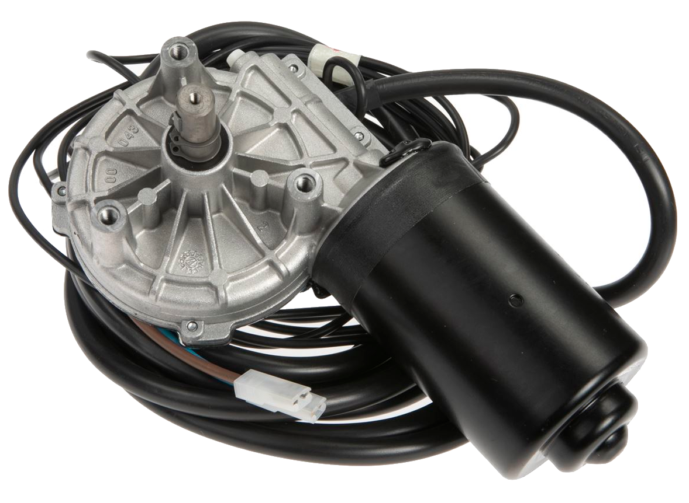
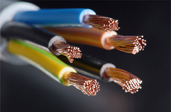
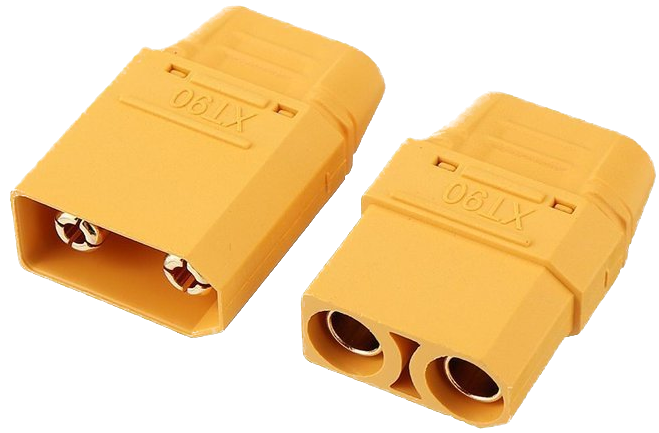

Silniki elektryczne używane są w mechanizmach drzwi automatycznych, szlabanów, wind i schodów ruchomych. Znajdziesz je również w małych urządzeniach codziennego użytku: maszynkach, trymerach i elektrycznych szczoteczkach do zębów. Znajdują się w każdym pojeździe spalinowym – pełnią funkcję rozrusznika, który umożliwia uruchomienie silnika spalinowego. Dzięki coraz lepszym parametrom stosowanych baterii, od kilku lat na rynku pojawia się coraz więcej pojazdów drogowych zasilanych silnikiem elektrycznym – samochodów, motocykli, skuterów, a także hulajnóg i rowerów elektrycznych.

Kabel elektryczny jest to rodzaj przewodu elektrycznego izolowanego, jedno- lub wielożyłowego, otoczonego wspólną powłoką. Chroni ona przed przedostaniem się wilgoci lub innych substancji szkodliwie działających na izolację, uszkodzeniami mechanicznymi oraz porażeniem prądem elektrycznym.
Kable służą do trwałego połączenia źródeł prądu z jego odbiornikami. Przesyła się nimi energię elektryczną bądź informacje za pośrednictwem prądu elektrycznego.

Złącze instalacji elektrycznej jest to urządzenie elektryczne, w którym następuje połączenie wspólnej sieci elektrycznej rozdzielczej z instalacją elektryczną odbiorcy. Jest więc punktem rozdziału między siecią rozdzielczą należącą do dostawcy energii a instalacją elektryczną należącą do właściciela budynku. Instalacja może mieć więcej niż jedno złącze. W złączu zazwyczaj znajduje się główne zabezpieczenie (zwarciowe) instalacji budynku, które powinno przerwać zasilanie tylko wtedy, gdy jest to absolutnie konieczne, tzn. w razie zwarcia przed kolejnymi zabezpieczeniami w instalacji albo w razie ich uszkodzenia.